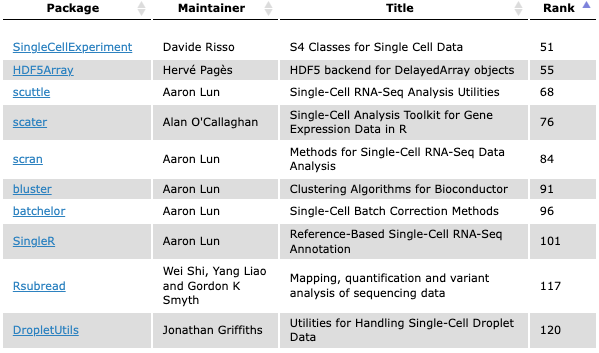
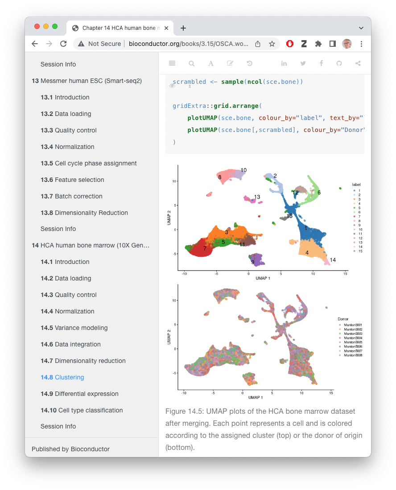

vignettes/A_HCA.Rmd
A_HCA.RmdFIXME: Along with the topic of your workshop, include how students can expect to spend their time. For the description may also include information about what type of workshop it is (e.g. instructor-led live demo, lab, lecture + lab, etc.). Instructors are strongly recommended to provide completely worked examples for lab sessions, and a set of stand-alone notes that can be read and understood outside of the workshop.
The focus is on the hca package. This package emphasize dplyr and ‘tidy’ approaches to working with data.frames. Files downloaded from the HCA or CellXGene web sites can be imported into R / Bioconductor as SingleCellExperiment objects through the LoomExperiment and zellkonverter packages.
| Activity | Time |
|---|---|
| Introduction to the HCA data portal | 5m |
| HCA discovery in R / Bioconductor | 10m |
List “big picture” student-centered workshop goals and learning objectives. Learning goals and objectives are related, but not the same thing. These goals and objectives will help some people to decide whether to attend the conference for training purposes, so please make these as precise and accurate as possible.
Learning goals are high-level descriptions of what participants will learn and be able to do after the workshop is over. Learning objectives, on the other hand, describe in very specific and measurable terms specific skills or knowledge attained. The Bloom’s Taxonomy may be a useful framework for defining and describing your goals and objectives, although there are others.
Extensive support for single-cell analysis in Bioconductor
E.g., 213 packages tagged ‘SingleCell’ in the release branch

Quality control, normalization, variance modeling, data integration / batch correction, dimensionality reduction, clustering, differential expression, cell type classification, etc
Infrastructure to support large out-of-memory data, etc.
Typically, processing after a ‘count matrix’ has been obtained
Orchestrating Single-Cell Analysis with Bioconductor (OSCA) – an amazing resource!

Recall
tibble() is a data.frame() but with a
nicer display.filter(): filter to include only specific rowsselect(): select columnsmutate(): change or add columnsglimpes(): get a quick summary of the first rows of the
tibble
left_join(x, y, by =) is a somehat more advanced
function, merging all rows of tibble x with rows in
y that match for columns specified by
by=.|>, typically used
to take the output of one command and ‘pipe’ it to the first input
argument of the next command
suppressPackageStartupMessages({
library(dplyr)
})
tbl <- as_tibble(mtcars, rownames = "car")
tbl
#> # A tibble: 32 × 12
#> car mpg cyl disp hp drat wt qsec vs am gear carb
#> <chr> <dbl> <dbl> <dbl> <dbl> <dbl> <dbl> <dbl> <dbl> <dbl> <dbl> <dbl>
#> 1 Mazda RX4 21 6 160 110 3.9 2.62 16.5 0 1 4 4
#> 2 Mazda RX4 … 21 6 160 110 3.9 2.88 17.0 0 1 4 4
#> 3 Datsun 710 22.8 4 108 93 3.85 2.32 18.6 1 1 4 1
#> 4 Hornet 4 D… 21.4 6 258 110 3.08 3.22 19.4 1 0 3 1
#> 5 Hornet Spo… 18.7 8 360 175 3.15 3.44 17.0 0 0 3 2
#> 6 Valiant 18.1 6 225 105 2.76 3.46 20.2 1 0 3 1
#> 7 Duster 360 14.3 8 360 245 3.21 3.57 15.8 0 0 3 4
#> 8 Merc 240D 24.4 4 147. 62 3.69 3.19 20 1 0 4 2
#> 9 Merc 230 22.8 4 141. 95 3.92 3.15 22.9 1 0 4 2
#> 10 Merc 280 19.2 6 168. 123 3.92 3.44 18.3 1 0 4 4
#> # … with 22 more rows
#> # ℹ Use `print(n = ...)` to see more rows
tbl |>
filter(cyl == 6) |>
select(car, mpg, disp, hp) |>
mutate(`L/100km` = 235.2 / mpg) # Liters per 100 km
#> # A tibble: 7 × 5
#> car mpg disp hp `L/100km`
#> <chr> <dbl> <dbl> <dbl> <dbl>
#> 1 Mazda RX4 21 160 110 11.2
#> 2 Mazda RX4 Wag 21 160 110 11.2
#> 3 Hornet 4 Drive 21.4 258 110 11.0
#> 4 Valiant 18.1 225 105 13.0
#> 5 Merc 280 19.2 168. 123 12.2
#> 6 Merc 280C 17.8 168. 123 13.2
#> 7 Ferrari Dino 19.7 145 175 11.9Why use an R script when the Data Portal exists?
Load required packages
suppressPackageStartupMessages({
library(hca)
library(LoomExperiment)
library(SingleCellExperiment)
})Discover projects
## basic information, like HCA data portal
p <- projects()
p
#> # A tibble: 261 × 14
#> projectId proje…¹ genus…² sampl…³ speci…⁴ speci…⁵ selec…⁶ libra…⁷ nucle…⁸
#> <chr> <chr> <list> <list> <list> <list> <list> <list> <list>
#> 1 74b6d569-3b1… 1.3 Mi… <chr> <chr> <chr> <chr> <chr> <chr> <chr>
#> 2 53c53cd4-812… A Cell… <chr> <chr> <chr> <chr> <chr> <chr> <chr>
#> 3 7027adc6-c9c… A Cell… <chr> <chr> <chr> <chr> <chr> <chr> <chr>
#> 4 94e4ee09-9b4… A Huma… <chr> <chr> <chr> <chr> <chr> <chr> <chr>
#> 5 60ea42e1-af4… A Prot… <chr> <chr> <chr> <chr> <chr> <chr> <chr>
#> 6 ef1e3497-515… A Sing… <chr> <chr> <chr> <chr> <chr> <chr> <chr>
#> 7 f86f1ab4-1fb… A Sing… <chr> <chr> <chr> <chr> <chr> <chr> <chr>
#> 8 602628d7-c03… A Sing… <chr> <chr> <chr> <chr> <chr> <chr> <chr>
#> 9 c1810dbc-16d… A cell… <chr> <chr> <chr> <chr> <chr> <chr> <chr>
#> 10 c0518445-3b3… A cell… <chr> <chr> <chr> <chr> <chr> <chr> <chr>
#> # … with 251 more rows, 5 more variables: pairedEnd <list>, workflow <list>,
#> # specimenDisease <list>, donorDisease <list>, developmentStage <list>, and
#> # abbreviated variable names ¹projectTitle, ²genusSpecies, ³sampleEntityType,
#> # ⁴specimenOrgan, ⁵specimenOrganPart, ⁶selectedCellType,
#> # ⁷libraryConstructionApproach, ⁸nucleicAcidSource
#> # ℹ Use `print(n = ...)` to see more rows, and `colnames()` to see all variable namesColumns with type <list> usually have some
projects with 0, 1, 2, or more of the corresponding column. This is more
clearly displayed when the dplyr print method allocates more room per
column, or when using glimpse(), or by pulling the column
from the table.
p |>
select(specimenOrganPart)
#> # A tibble: 261 × 1
#> specimenOrganPart
#> <list>
#> 1 <chr [1]>
#> 2 <chr [2]>
#> 3 <chr [0]>
#> 4 <chr [0]>
#> 5 <chr [1]>
#> 6 <chr [4]>
#> 7 <chr [0]>
#> 8 <chr [3]>
#> 9 <chr [0]>
#> 10 <chr [6]>
#> # … with 251 more rows
#> # ℹ Use `print(n = ...)` to see more rows
p |>
glimpse()
#> Rows: 261
#> Columns: 14
#> $ projectId <chr> "74b6d569-3b11-42ef-b6b1-a0454522b4a0", "5…
#> $ projectTitle <chr> "1.3 Million Brain Cells from E18 Mice", "…
#> $ genusSpecies <list> "Mus musculus", "Homo sapiens", "Mus musc…
#> $ sampleEntityType <list> "specimens", "specimens", "specimens", <"…
#> $ specimenOrgan <list> "brain", "prostate gland", "heart", "live…
#> $ specimenOrganPart <list> "cortex", <"peripheral zone of prostate",…
#> $ selectedCellType <list> "neuron", <"basal cell of prostate epithe…
#> $ libraryConstructionApproach <list> "10x 3' v2", "10X v2 sequencing", "10X 3'…
#> $ nucleicAcidSource <list> "single cell", "single cell", "single cel…
#> $ pairedEnd <list> FALSE, FALSE, FALSE, FALSE, TRUE, FALSE, …
#> $ workflow <list> <>, <"optimus_post_processing_v1.0.0", "o…
#> $ specimenDisease <list> "normal", "normal", "normal", <"hepatocel…
#> $ donorDisease <list> "normal", "normal", "normal", <"cholangio…
#> $ developmentStage <list> "mouse embryo stage", "human adult stage"…
p |>
head() |>
pull(specimenOrganPart)
#> [[1]]
#> [1] "cortex"
#>
#> [[2]]
#> [1] "peripheral zone of prostate" "transition zone of prostate"
#>
#> [[3]]
#> character(0)
#>
#> [[4]]
#> character(0)
#>
#> [[5]]
#> [1] "saliva"
#>
#> [[6]]
#> [1] "epithelium of bronchus" "epithelium of trachea"
#> [3] "inferior nasal concha" "terminal bronchus epithelium"The table can be expanded so that there is one row for each
specimenOrganPart, rather than for each project; it is
usually not productive to unnest multiple columns, because this leads to
a combinatorial number of rows.
p |>
tidyr::unnest(specimenOrganPart)
#> # A tibble: 415 × 14
#> projectId proje…¹ genus…² sampl…³ speci…⁴ speci…⁵ selec…⁶ libra…⁷ nucle…⁸
#> <chr> <chr> <list> <list> <list> <chr> <list> <list> <list>
#> 1 74b6d569-3b1… 1.3 Mi… <chr> <chr> <chr> cortex <chr> <chr> <chr>
#> 2 53c53cd4-812… A Cell… <chr> <chr> <chr> periph… <chr> <chr> <chr>
#> 3 53c53cd4-812… A Cell… <chr> <chr> <chr> transi… <chr> <chr> <chr>
#> 4 60ea42e1-af4… A Prot… <chr> <chr> <chr> saliva <chr> <chr> <chr>
#> 5 ef1e3497-515… A Sing… <chr> <chr> <chr> epithe… <chr> <chr> <chr>
#> 6 ef1e3497-515… A Sing… <chr> <chr> <chr> epithe… <chr> <chr> <chr>
#> 7 ef1e3497-515… A Sing… <chr> <chr> <chr> inferi… <chr> <chr> <chr>
#> 8 ef1e3497-515… A Sing… <chr> <chr> <chr> termin… <chr> <chr> <chr>
#> 9 602628d7-c03… A Sing… <chr> <chr> <chr> annulu… <chr> <chr> <chr>
#> 10 602628d7-c03… A Sing… <chr> <chr> <chr> nucleu… <chr> <chr> <chr>
#> # … with 405 more rows, 5 more variables: pairedEnd <list>, workflow <list>,
#> # specimenDisease <list>, donorDisease <list>, developmentStage <list>, and
#> # abbreviated variable names ¹projectTitle, ²genusSpecies, ³sampleEntityType,
#> # ⁴specimenOrgan, ⁵specimenOrganPart, ⁶selectedCellType,
#> # ⁷libraryConstructionApproach, ⁸nucleicAcidSource
#> # ℹ Use `print(n = ...)` to see more rows, and `colnames()` to see all variable namesArguments to projects() allow information to be returned
in different formats, or to return much more information about each
project. Using as = "list" produces a nested data structure
with all information provided by the HCA Data Portal; exploring this
data is facilitated by listveiwer::jsonedit(), using
as = "lol" and lol_* functions in the hca package, or perhaps
cellxgenedp::jmespath().
## all information, as a list-of-lists
pl <- projects(as = "list")
lengths(pl)
#> pagination termFacets hits
#> 8 36 261An alternative to working with all projects is to apply filters during the original query. For instance, to select subsets of projects, e.g., studying liver. It is possible to specify several filters at once, as we will see below.
liver_filter <- filters(
specimenOrgan = list(is = "liver")
)
liver_projects <- projects(liver_filter)
liver_projects |>
select(projectId, projectTitle)
#> # A tibble: 21 × 2
#> projectId projectTitle
#> <chr> <chr>
#> 1 94e4ee09-9b4b-410a-84dc-a751ad36d0df A Human Liver Cell Atlas reveals Hetero…
#> 2 a9301beb-e9fa-42fe-b75c-84e8a460c733 A human cell atlas of fetal gene expres…
#> 3 c31fa434-c9ed-4263-a9b6-d9ffb9d44005 A single-cell atlas of chromatin access…
#> 4 8ab8726d-81b9-4bd2-acc2-4d50bee786b4 An organoid and multi-organ development…
#> 5 04ad400c-58cb-40a5-bc2b-2279e13a910b Blood and immune development in human f…
#> 6 c7c54245-548b-4d4f-b15e-0d7e238ae6c8 Construction of a single-cell transcrip…
#> 7 a9f5323a-ce71-471c-9caf-04cc118fd1d7 Decoding Human Megakaryocyte Development
#> 8 f2fe82f0-4454-4d84-b416-a885f3121e59 Decoding human fetal liver haematopoies…
#> 9 ccef38d7-aa92-4010-9621-c4c7b1182647 Dissecting the clonal nature of allelic…
#> 10 4d6f6c96-2a83-43d8-8fe1-0f53bffd4674 Dissecting the human liver cellular lan…
#> # … with 11 more rows
#> # ℹ Use `print(n = ...)` to see more rows
## facet options available for filtering: facet_options()Main functions for exploring HCA data
projects(): finding projects of interest.bundles(), samples(): can be useful when
exploring a single project in detail.files(): use to download files (e.g., fastq files to
start an analysis from scratch; ‘.loom’ files containing gene x cell
count matrices produced by standard HCA pipelines).hca_next(), hca_prev() to ‘page’ through
large datasets.HCA standard processing pipelines
Projects with .loom files produced by the standard pipeline satisfy the following filter
standard_loom_file_filter <- filters(
fileSource = list(is = "DCP/2 Analysis"),
fileFormat = list(is = "loom"),
workflow = list(is = "optimus_post_processing_v1.0.0")
)
loom_files <- files(standard_loom_file_filter)Which projects studying the liver have a standard loom file available?
## inner_join -- projectId & projectTitles in both tibbles
liver_loom_projects <- inner_join(
liver_projects, loom_files,
by = c("projectId", "projectTitle")
)
liver_loom_projects |>
select(projectId, fileId, projectTitle, fileSize = size)
#> # A tibble: 11 × 4
#> projectId fileId proje…¹ fileS…²
#> <chr> <chr> <chr> <dbl>
#> 1 f2fe82f0-4454-4d84-b416-a885f3121e59 815e27f4-56f9-538a-a770… Decodi… 2.45e8
#> 2 f2fe82f0-4454-4d84-b416-a885f3121e59 e9ac4222-8586-5d9b-8c6d… Decodi… 5.39e9
#> 3 f2fe82f0-4454-4d84-b416-a885f3121e59 c15acbfd-268a-571c-ab78… Decodi… 1.09e9
#> 4 f2fe82f0-4454-4d84-b416-a885f3121e59 84e656b7-3740-5fa9-8f81… Decodi… 1.82e9
#> 5 4d6f6c96-2a83-43d8-8fe1-0f53bffd4674 b1f60da2-db89-556b-b89f… Dissec… 1.18e9
#> 6 c41dffbf-ad83-447c-a0e1-13e689d9b258 11f8ba42-a556-5757-a0f4… Resolv… 1.30e8
#> 7 c41dffbf-ad83-447c-a0e1-13e689d9b258 ec8fcbf6-8556-5820-af81… Resolv… 2.90e8
#> 8 c41dffbf-ad83-447c-a0e1-13e689d9b258 58ff8ba0-280d-51b3-923b… Resolv… 1.25e9
#> 9 559bb888-7829-41f2-ace5-2c05c7eb81e9 6e061337-810d-5089-a923… Single… 5.11e8
#> 10 559bb888-7829-41f2-ace5-2c05c7eb81e9 8fbd3d96-dcdf-5c58-b9b5… Single… 2.96e8
#> 11 559bb888-7829-41f2-ace5-2c05c7eb81e9 0264fd26-4f63-5a35-a524… Single… 6.29e8
#> # … with abbreviated variable names ¹projectTitle, ²fileSizeChoose one project more-or-less arbitrarily, for demonstration purposes
liver_loom_projects |>
filter(projectId == "4d6f6c96-2a83-43d8-8fe1-0f53bffd4674") |>
glimpse()
#> Rows: 1
#> Columns: 20
#> $ projectId <chr> "4d6f6c96-2a83-43d8-8fe1-0f53bffd4674"
#> $ projectTitle <chr> "Dissecting the human liver cellular lands…
#> $ genusSpecies <list> "Homo sapiens"
#> $ sampleEntityType <list> "specimens"
#> $ specimenOrgan <list> "liver"
#> $ specimenOrganPart <list> "caudate lobe"
#> $ selectedCellType <list> <>
#> $ libraryConstructionApproach <list> "10x 3' v2"
#> $ nucleicAcidSource <list> "single cell"
#> $ pairedEnd <list> FALSE
#> $ workflow <list> <"optimus_post_processing_v1.0.0", "optimu…
#> $ specimenDisease <list> "normal"
#> $ donorDisease <list> "normal"
#> $ developmentStage <list> "human adult stage"
#> $ fileId <chr> "b1f60da2-db89-556b-b89f-6fbe29a81697"
#> $ name <chr> "sc-landscape-human-liver-10XV2.loom"
#> $ fileFormat <chr> "loom"
#> $ size <dbl> 1176122907
#> $ version <chr> "2021-02-11T19:41:14.000000Z"
#> $ url <chr> "https://service.azul.data.humancellatlas…Create a filter and download the file
liver_loom_filter <- filters(
projectId = list(is = "4d6f6c96-2a83-43d8-8fe1-0f53bffd4674"),
fileSource = list(is = "DCP/2 Analysis"),
fileFormat = list(is = "loom"),
workflow = list(is = "optimus_post_processing_v1.0.0")
)
loom_file_path <-
files(liver_loom_filter) |> # find files matching filter
files_download() # download (and cache) to local diskThe file is cached locally, so running files_download()
a second time does not re-download it.
‘.loom’ files are easily integrated into R / Bioconductor workflows using the LoomExperiment package.
suppressPackageStartupMessages({
library(LoomExperiment)
})
loom <- import(loom_file_path)
loom
#> class: LoomExperiment
#> dim: 58347 332497
#> metadata(15): last_modified CreationDate ...
#> project.provenance.document_id specimen_from_organism.organ
#> assays(1): matrix
#> rownames: NULL
#> rowData names(29): Gene antisense_reads ... reads_per_molecule
#> spliced_reads
#> colnames: NULL
#> colData names(43): CellID antisense_reads ... reads_unmapped
#> spliced_reads
#> rowGraphs(0): NULL
#> colGraphs(0): NULLThe metadata() of the loom file contains useful
information on provenance.
metadata(loom) |> str()
#> List of 15
#> $ last_modified : chr "20210211T194047.237912Z"
#> $ CreationDate : chr "20210211T193103.553468Z"
#> $ LOOM_SPEC_VERSION : chr "3.0.0"
#> $ donor_organism.genus_species : chr "Homo sapiens"
#> $ expression_data_type : chr "exonic"
#> $ input_id : chr "02f207ae-217b-42ce-9733-c03e61541fcc, 2b965070-e2c5-4c26-92c9-c94483f1a00c, 3f9058b9-4243-4ef1-a345-857a5b9ff78"| __truncated__
#> $ input_id_metadata_field : chr "sequencing_process.provenance.document_id"
#> $ input_name : chr "P5TLH_TLH, P3TLH_TLH, P1TLH_TLH, P4TLH_TLH, P2TLH_TLH"
#> $ input_name_metadata_field : chr "sequencing_input.biomaterial_core.biomaterial_id"
#> $ library_preparation_protocol.library_construction_approach: chr "10X v2 sequencing"
#> $ optimus_output_schema_version : chr "1.0.0"
#> $ pipeline_version : chr "Optimus_v4.2.2"
#> $ project.project_core.project_name : chr "SingleCellLiverLandscape"
#> $ project.provenance.document_id : chr "4d6f6c96-2a83-43d8-8fe1-0f53bffd4674"
#> $ specimen_from_organism.organ : chr "liver"The .loom files produced by the standard HCA pipeline contain QC
metrics on the rows (genes) and columns (cells), but no biological
information about the cells. Remedy this using
optimus_loom_annotation()
annotated_loom <- optimus_loom_annotation(loom)
annotated_loom
#> class: LoomExperiment
#> dim: 58347 332497
#> metadata(16): last_modified CreationDate ...
#> specimen_from_organism.organ manifest
#> assays(1): matrix
#> rownames: NULL
#> rowData names(29): Gene antisense_reads ... reads_per_molecule
#> spliced_reads
#> colnames: NULL
#> colData names(98): input_id CellID ...
#> sequencing_input.biomaterial_core.biomaterial_id
#> sequencing_input_type
#> rowGraphs(0): NULL
#> colGraphs(0): NULL
new_columns <- setdiff(
names(colData(annotated_loom)),
names(colData(loom))
)
length(new_columns)
#> [1] 55The following uses names of the annotation columns to show that there are 5 donors (4 males and one female) ranging in age from 21 to 65 years old. There are between 39782 and 87538 cells per donor.
colData(annotated_loom) |>
as_tibble() |>
dplyr::count(
biomaterial_id = donor_organism.biomaterial_core.biomaterial_id,
sex = donor_organism.sex,
organism_age = donor_organism.organism_age
)
#> # A tibble: 5 × 4
#> biomaterial_id sex organism_age n
#> <chr> <chr> <chr> <int>
#> 1 P1TLH male 44 year 39782
#> 2 P2TLH male 65 year 73823
#> 3 P3TLH female 41 year 66422
#> 4 P4TLH male 21 year 64932
#> 5 P5TLH male 26 year 87538A minimal coercion creates a SingleCellExperiment that can be used in standard R / Bioconductor single cell workflows.
sce <-
annotated_loom |>
as("SingleCellExperiment")
sce
#> class: SingleCellExperiment
#> dim: 58347 332497
#> metadata(16): last_modified CreationDate ...
#> specimen_from_organism.organ manifest
#> assays(1): matrix
#> rownames: NULL
#> rowData names(29): Gene antisense_reads ... reads_per_molecule
#> spliced_reads
#> colnames: NULL
#> colData names(98): input_id CellID ...
#> sequencing_input.biomaterial_core.biomaterial_id
#> sequencing_input_type
#> reducedDimNames(0):
#> mainExpName: NULL
#> altExpNames(0):
sessionInfo()
#> R version 4.2.0 (2022-04-22)
#> Platform: x86_64-pc-linux-gnu (64-bit)
#> Running under: Ubuntu 20.04.4 LTS
#>
#> Matrix products: default
#> BLAS: /usr/lib/x86_64-linux-gnu/openblas-pthread/libblas.so.3
#> LAPACK: /usr/lib/x86_64-linux-gnu/openblas-pthread/liblapack.so.3
#>
#> locale:
#> [1] LC_CTYPE=en_US.UTF-8 LC_NUMERIC=C
#> [3] LC_TIME=en_US.UTF-8 LC_COLLATE=en_US.UTF-8
#> [5] LC_MONETARY=en_US.UTF-8 LC_MESSAGES=en_US.UTF-8
#> [7] LC_PAPER=en_US.UTF-8 LC_NAME=C
#> [9] LC_ADDRESS=C LC_TELEPHONE=C
#> [11] LC_MEASUREMENT=en_US.UTF-8 LC_IDENTIFICATION=C
#>
#> attached base packages:
#> [1] stats4 stats graphics grDevices utils datasets methods
#> [8] base
#>
#> other attached packages:
#> [1] LoomExperiment_1.15.0 BiocIO_1.7.1
#> [3] rhdf5_2.41.1 SingleCellExperiment_1.19.0
#> [5] SummarizedExperiment_1.27.1 Biobase_2.57.1
#> [7] GenomicRanges_1.49.0 GenomeInfoDb_1.33.3
#> [9] IRanges_2.31.0 MatrixGenerics_1.9.1
#> [11] matrixStats_0.62.0 S4Vectors_0.35.1
#> [13] BiocGenerics_0.43.0 hca_1.5.5
#> [15] dplyr_1.0.9
#>
#> loaded via a namespace (and not attached):
#> [1] bitops_1.0-7 fs_1.5.2 bit64_4.0.5
#> [4] filelock_1.0.2 httr_1.4.3 rprojroot_2.0.3
#> [7] tools_4.2.0 bslib_0.4.0 utf8_1.2.2
#> [10] R6_2.5.1 DT_0.23 HDF5Array_1.25.1
#> [13] DBI_1.1.3 rhdf5filters_1.9.0 tidyselect_1.1.2
#> [16] bit_4.0.4 curl_4.3.2 compiler_4.2.0
#> [19] textshaping_0.3.6 cli_3.3.0 formatR_1.12
#> [22] desc_1.4.1 DelayedArray_0.23.0 sass_0.4.2
#> [25] readr_2.1.2 rappdirs_0.3.3 pkgdown_2.0.6
#> [28] systemfonts_1.0.4 stringr_1.4.0 digest_0.6.29
#> [31] rmarkdown_2.14 XVector_0.37.0 pkgconfig_2.0.3
#> [34] htmltools_0.5.3 dbplyr_2.2.1 fastmap_1.1.0
#> [37] htmlwidgets_1.5.4 rlang_1.0.4 RSQLite_2.2.15
#> [40] shiny_1.7.2 jquerylib_0.1.4 generics_0.1.3
#> [43] jsonlite_1.8.0 vroom_1.5.7 RCurl_1.98-1.7
#> [46] magrittr_2.0.3 GenomeInfoDbData_1.2.8 futile.logger_1.4.3
#> [49] Matrix_1.4-1 Rcpp_1.0.9 Rhdf5lib_1.19.2
#> [52] fansi_1.0.3 lifecycle_1.0.1 stringi_1.7.8
#> [55] yaml_2.3.5 zlibbioc_1.43.0 BiocFileCache_2.5.0
#> [58] grid_4.2.0 blob_1.2.3 parallel_4.2.0
#> [61] promises_1.2.0.1 crayon_1.5.1 miniUI_0.1.1.1
#> [64] lattice_0.20-45 hms_1.1.1 knitr_1.39
#> [67] pillar_1.8.0 futile.options_1.0.1 glue_1.6.2
#> [70] evaluate_0.15 lambda.r_1.2.4 vctrs_0.4.1
#> [73] tzdb_0.3.0 httpuv_1.6.5 purrr_0.3.4
#> [76] tidyr_1.2.0 assertthat_0.2.1 cachem_1.0.6
#> [79] xfun_0.31 mime_0.12 xtable_1.8-4
#> [82] later_1.3.0 ragg_1.2.2 tibble_3.1.7
#> [85] memoise_2.0.1 ellipsis_0.3.2